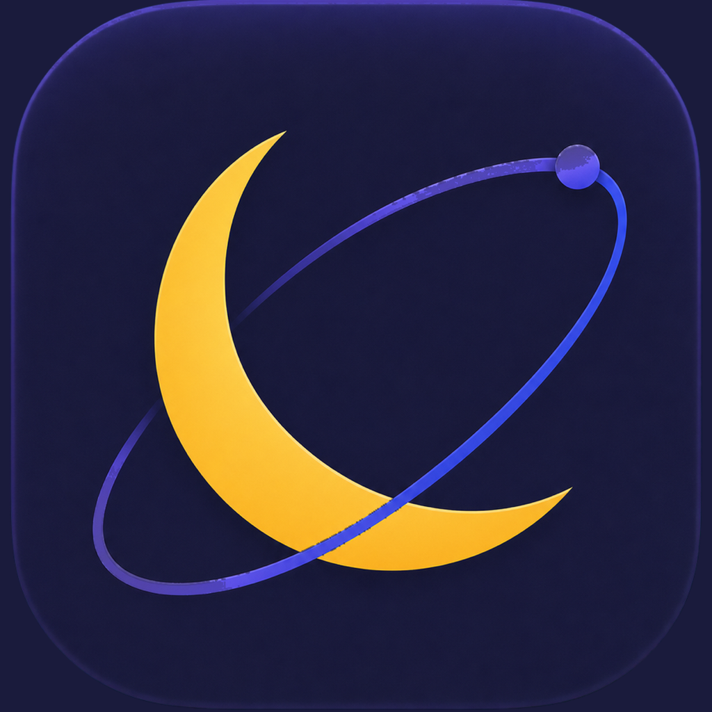

KEEPAWAKE FOR macOS
Let the screen dim.
Keep the job running.
App-aware sleep prevention, timed sessions, and low-battery protection. Local-only.

Koi's AI Transformation Notes
Latest dev build · release pending
App-aware sleep prevention, timed sessions, and low-battery protection. Local-only.
